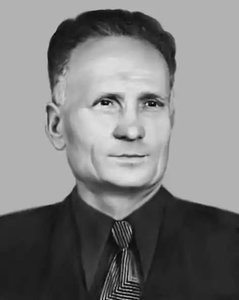

Петро Остапович Гришко народився 2 січня 1925, село Соснівка, нині Конотопського району Сумської області в сім'ї хліборобів. До війни закінчив семирічку в селі Заводи, куди переселилась сім'я, та перший курс фельдшерської школи в Конотопі.
Під час Другої світової війни відправлений на каторжні роботи до Німеччини. У 1943–1948 роках служив у Радянській армії. Брав участь у боях за визволення Білорусі, визволяв Варшаву та Берлін.
Після демобілізації працював у колгоспі. 1950 року Петра Гришка запросили на вчительську роботу в село Заводи. Заочно закінчив Лебединське педагогічне училище, а потім Ніжинський педагогічний інститут, де здобув фах учителя української мови та літератури. Роботі в школі віддав понад 30 років, з яких понад 17 працював директором восьмирічки в Заводах, а потім 6 років — на посаді завуча середньої школи в рідній Соснівці, після чого вийшов на пенсію. Неодноразово був депутатом сільської ради. Гуморески почав писати в 1960-х роках. Друкувався в "Перці", "Україні", "Прапорі", "Літературній Україні", "Радянській Україні", "Сільських вістях", "Літературній газеті", у колективних збірниках "Ясні усмішки", "Вусаті діти", "Веселий ярмарок", літературному альманасі "Слобожанщина", "Заспів" і багатьох інших виданнях. Окремі байки Петра Гришка в перекладі опубліковано в Болгарії. Окремими виданнями вийшли збірки "Квач і Скрипка" (1980), "Рябко в заступниках" (1992), "Гаманець під слідством" (1994), "Жаліслива муха" (2001). 1990 року поет став лауреатом премії журналу "Перець". Дата смерті 30 грудня 2003, с. Заводи Конотопського району.